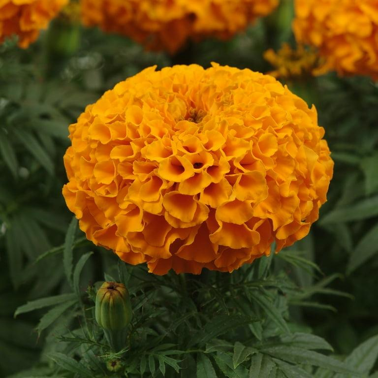
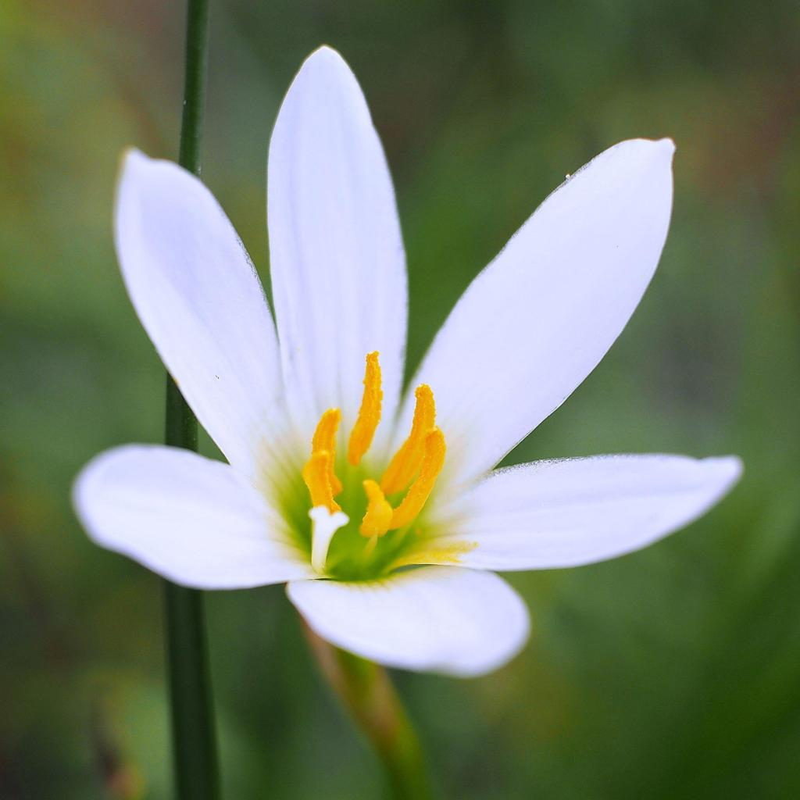
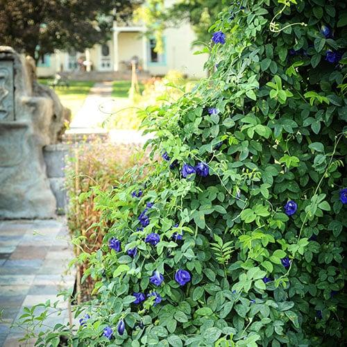
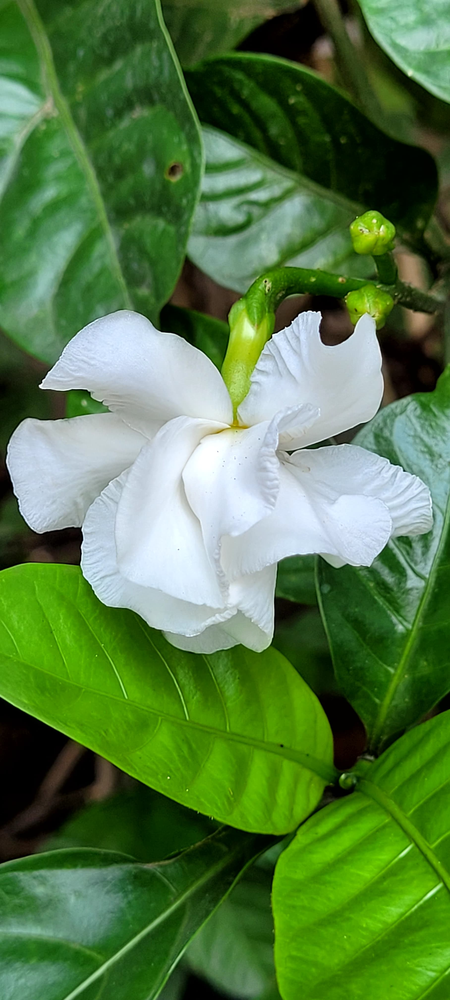
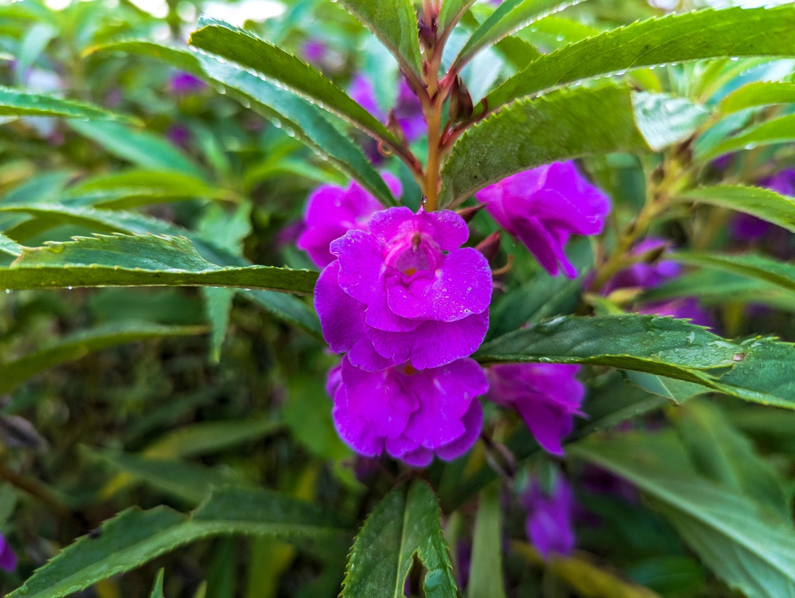
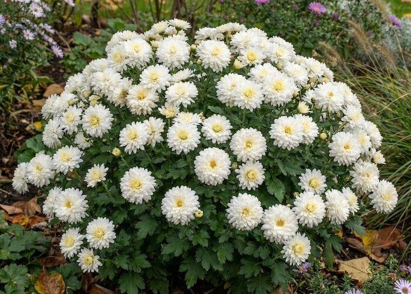

Monsoon's sweet flowes collections
Monsoon is not just a weather change , it's also a immotion for us specaily BEngali people .
It's time to celebrate the rainfall with bunch of flowers in our garden, they can be Yellow , red . blue , pink e.t.c.
Gardening holds a special place in Bengali homes during this season.
The generous rainfall transforms balconies, terraces, and gardens into lush green spaces.
Flowers such as rain lilies, aparajita (butterfly pea),
dopati (balsam),br and nayantara (periwinkle) bloom vibrantly, filling homes with color and freshness.
Caring for plants during the monsoon is more than a hobby—it is a tradition that strengthens the bond between people and nature.
Watching new leaves emerge and flowers bloom after every shower reminds Bengalis of hope,
growth, and the beauty of simple living.

African Marigold is one of the most striking ornamental flowering
plants, admired for its large, globe-shaped blossoms and brilliant
golden-orange colors. Although native to Mexico and Central America,
it has become one of the most popular garden flowers across the world
because of its vibrant appearance and long blooming season.
The plant grows best in full sunlight and fertile, well-drained soil.
Its lush green foliage creates a beautiful contrast with the bright
blossoms, making it ideal for flower beds, borders, balconies,
pathways, and landscape gardens.
Besides its ornamental beauty, African Marigold attracts butterflies
and bees while naturally helping to repel several harmful insects,
making it a valuable companion plant for home gardens during the
monsoon season.

Rain Lily is one of the first flowers to bloom after a refreshing
monsoon shower. Its elegant trumpet-shaped blossoms emerge almost
overnight, creating a magical display of white, pink, or yellow
flowers across gardens and open landscapes.
Growing from underground bulbs, Rain Lily thrives in moist,
well-drained soil with plenty of sunlight. It requires very little
maintenance and naturally multiplies each year, making it an excellent
choice for both beginners and experienced gardeners.
The flower symbolizes hope, renewal, and fresh beginnings. Its sudden
appearance after rainfall perfectly represents the beauty and freshness
of the monsoon season.

Aparajita, also known as Butterfly Pea, is a graceful climbing vine
admired for its deep blue, violet, and occasionally white blossoms.
During the monsoon season, the plant grows rapidly and covers fences,
trellises, and garden arches with vibrant flowers.
It flourishes in sunny locations with fertile, well-drained soil and
moderate watering. Its fast-growing nature makes it one of the most
attractive ornamental climbers for home gardens.
Aparajita holds great cultural and medicinal significance in India.
The flowers are widely used in traditional worship, herbal tea, and
natural remedies. Their striking blue color also attracts butterflies
and bees, bringing more life and biodiversity to the garden.

Nayantara, popularly known as Periwinkle, is one of the most reliable
flowering plants found in home gardens. It blooms almost throughout
the year, but during the monsoon season its glossy green foliage and
colorful blossoms become even more attractive. The flowers appear in
shades of white, soft pink, rose, lavender, and purple, creating a
peaceful and refreshing atmosphere.
This hardy plant grows well in warm climates and prefers fertile,
well-drained soil with moderate watering. It can tolerate occasional
dry conditions, making it an excellent choice for beginners as well as
experienced gardeners. Regular pruning encourages bushier growth and
continuous flowering.
Apart from its ornamental value, Nayantara is also known for its
medicinal importance. Several natural compounds extracted from the
plant have been widely studied in modern medicine. Its year-round
blooms symbolize hope, endurance, and the beauty of nature through
every season.

Dopati, commonly known as Garden Balsam, is one of the most beloved
flowers of the rainy season. It produces vibrant blossoms in shades
of pink, magenta, purple, red, white, and lavender, instantly adding
beauty and freshness to gardens, balconies, and flower beds.
The plant grows rapidly in moist, fertile soil and enjoys the cool,
humid climate of the monsoon. With regular watering and a few hours
of sunlight each day, Dopati blooms continuously throughout the rainy
months, creating a colorful display among its lush green foliage.
Besides its ornamental appeal, Dopati attracts butterflies and other
beneficial pollinators, helping to maintain a healthy garden
ecosystem. Its cheerful blossoms perfectly capture the lively spirit
and refreshing charm of the monsoon season.

Chrysanthemum is one of the world's most admired ornamental flowers,
celebrated for its perfectly layered petals and remarkable variety of
colors. Although it is mainly associated with autumn, healthy foliage
and flower buds begin developing during the monsoon when the plant is
given proper care.
Chrysanthemums thrive in fertile, well-drained soil enriched with
organic matter and plenty of sunlight. Regular pruning, balanced
watering, and proper air circulation encourage stronger stems,
healthier leaves, and abundant flowering during the blooming season.
Across many cultures, Chrysanthemums symbolize happiness, longevity,
friendship, and positivity. Their elegant blossoms are widely used in
gardens, flower arrangements, festivals, and landscape decoration,
adding timeless beauty and vibrant color to every outdoor space.